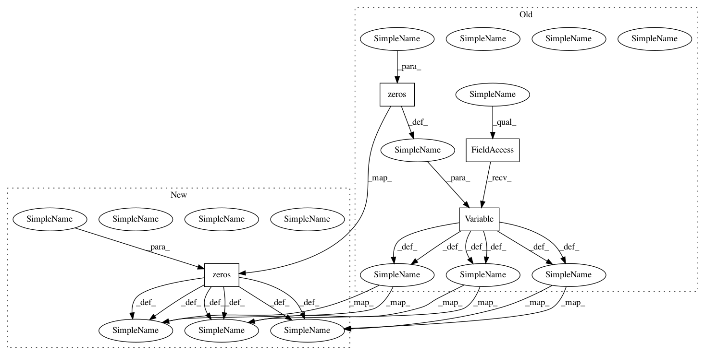

70ea65ca477b6fc05d5b24d03b559f424ac3a1c8,main.py,,batchify_with_label,#,204
Before Change
feature_seq_tensors = []
for idx in range(feature_num):
feature_seq_tensors.append(autograd.Variable(torch.zeros((batch_size, max_seq_len)),volatile = volatile_flag).long())
mask = autograd.Variable(torch.zeros((batch_size, max_seq_len)),volatile = volatile_flag).byte()
for idx, (seq, label, seqlen) in enumerate(zip(words, labels, word_seq_lengths)):
word_seq_tensor[idx, :seqlen] = torch.LongTensor(seq)
label_seq_tensor[idx, :seqlen] = torch.LongTensor(label)
mask[idx, :seqlen] = torch.Tensor([1]*seqlen)
for idy in range(feature_num):
feature_seq_tensors[idy][idx,:seqlen] = torch.LongTensor(features[idx][:,idy])
word_seq_lengths, word_perm_idx = word_seq_lengths.sort(0, descending=True)
word_seq_tensor = word_seq_tensor[word_perm_idx]
for idx in range(feature_num):
feature_seq_tensors[idx] = feature_seq_tensors[idx][word_perm_idx]
label_seq_tensor = label_seq_tensor[word_perm_idx]
mask = mask[word_perm_idx]
////// deal with char
// pad_chars (batch_size, max_seq_len)
pad_chars = [chars[idx] + [[0]] * (max_seq_len-len(chars[idx])) for idx in range(len(chars))]
length_list = [list(map(len, pad_char)) for pad_char in pad_chars]
max_word_len = max(map(max, length_list))
char_seq_tensor = autograd.Variable(torch.zeros((batch_size, max_seq_len, max_word_len)), volatile = volatile_flag).long()
char_seq_lengths = torch.LongTensor(length_list)
for idx, (seq, seqlen) in enumerate(zip(pad_chars, char_seq_lengths)):
for idy, (word, wordlen) in enumerate(zip(seq, seqlen)):
// print len(word), wordlen
char_seq_tensor[idx, idy, :wordlen] = torch.LongTensor(word)
char_seq_tensor = char_seq_tensor[word_perm_idx].view(batch_size*max_seq_len,-1)
char_seq_lengths = char_seq_lengths[word_perm_idx].view(batch_size*max_seq_len,)
char_seq_lengths, char_perm_idx = char_seq_lengths.sort(0, descending=True)
char_seq_tensor = char_seq_tensor[char_perm_idx]
_, char_seq_recover = char_perm_idx.sort(0, descending=False)
_, word_seq_recover = word_perm_idx.sort(0, descending=False)
if gpu:
word_seq_tensor = word_seq_tensor.cuda()
for idx in range(feature_num):
feature_seq_tensors[idx] = feature_seq_tensors[idx].cuda()
word_seq_lengths = word_seq_lengths.cuda()
word_seq_recover = word_seq_recover.cuda()
label_seq_tensor = label_seq_tensor.cuda()
char_seq_tensor = char_seq_tensor.cuda()
char_seq_recover = char_seq_recover.cuda()
mask = mask.cuda()
return word_seq_tensor,feature_seq_tensors, word_seq_lengths, word_seq_recover, char_seq_tensor, char_seq_lengths, char_seq_recover, label_seq_tensor, mask
After Change
feature_seq_tensors = []
for idx in range(feature_num):
feature_seq_tensors.append(torch.zeros((batch_size, max_seq_len),requires_grad = if_train).long())
mask = torch.zeros((batch_size, max_seq_len), requires_grad = if_train).byte()
for idx, (seq, label, seqlen) in enumerate(zip(words, labels, word_seq_lengths)):
seqlen = seqlen.item()
word_seq_tensor[idx, :seqlen] = torch.LongTensor(seq)
label_seq_tensor[idx, :seqlen] = torch.LongTensor(label)
mask[idx, :seqlen] = torch.Tensor([1]*seqlen)
for idy in range(feature_num):
feature_seq_tensors[idy][idx,:seqlen] = torch.LongTensor(features[idx][:,idy])
word_seq_lengths, word_perm_idx = word_seq_lengths.sort(0, descending=True)
word_seq_tensor = word_seq_tensor[word_perm_idx]
for idx in range(feature_num):
feature_seq_tensors[idx] = feature_seq_tensors[idx][word_perm_idx]
label_seq_tensor = label_seq_tensor[word_perm_idx]
mask = mask[word_perm_idx]
////// deal with char
// pad_chars (batch_size, max_seq_len)
pad_chars = [chars[idx] + [[0]] * (max_seq_len-len(chars[idx])) for idx in range(len(chars))]
length_list = [list(map(len, pad_char)) for pad_char in pad_chars]
max_word_len = max(map(max, length_list))
char_seq_tensor = torch.zeros((batch_size, max_seq_len, max_word_len), requires_grad = if_train).long()
char_seq_lengths = torch.LongTensor(length_list)
for idx, (seq, seqlen) in enumerate(zip(pad_chars, char_seq_lengths)):
for idy, (word, wordlen) in enumerate(zip(seq, seqlen)):
// print len(word), wordlen
char_seq_tensor[idx, idy, :wordlen] = torch.LongTensor(word)
char_seq_tensor = char_seq_tensor[word_perm_idx].view(batch_size*max_seq_len,-1)
char_seq_lengths = char_seq_lengths[word_perm_idx].view(batch_size*max_seq_len,)
char_seq_lengths, char_perm_idx = char_seq_lengths.sort(0, descending=True)
char_seq_tensor = char_seq_tensor[char_perm_idx]
_, char_seq_recover = char_perm_idx.sort(0, descending=False)
_, word_seq_recover = word_perm_idx.sort(0, descending=False)
if gpu:
word_seq_tensor = word_seq_tensor.cuda()
for idx in range(feature_num):
feature_seq_tensors[idx] = feature_seq_tensors[idx].cuda()
word_seq_lengths = word_seq_lengths.cuda()
word_seq_recover = word_seq_recover.cuda()
label_seq_tensor = label_seq_tensor.cuda()
char_seq_tensor = char_seq_tensor.cuda()
char_seq_recover = char_seq_recover.cuda()
mask = mask.cuda()
return word_seq_tensor,feature_seq_tensors, word_seq_lengths, word_seq_recover, char_seq_tensor, char_seq_lengths, char_seq_recover, label_seq_tensor, mask
In pattern: SUPERPATTERN
Frequency: 4
Non-data size: 4
Instances
Project Name: jiesutd/NCRFpp
Commit Name: 70ea65ca477b6fc05d5b24d03b559f424ac3a1c8
Time: 2018-12-17
Author: jieynlp@gmail.com
File Name: main.py
Class Name:
Method Name: batchify_with_label